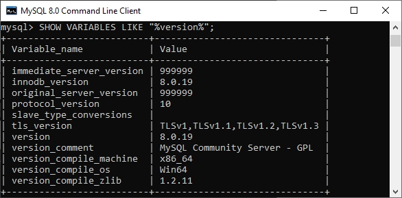
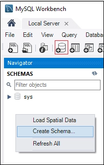
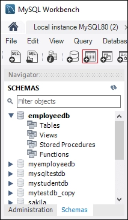

If you want to build a career in web development, especially in backend development, having a good understanding of MySQL is essential. Whether you are preparing for your first job or planning to switch to a new role, knowing the most commonly asked MySQL interview questions can help you perform better in technical interviews.
MySQL is one of the most widely used database management systems for applications of all sizes. It is secure, cost-effective, fast, scalable, and compatible with various platforms and programming languages.
Some of the key job roles that require MySQL skills include:
- Backend Developer
- Database Engineer
- Web App Developer
- MySQL Database Administrator
- PHP Developer
- Software Engineer
- Full-Stack Developer
So, whether you are a fresher or an experienced professional, these top MySQL interview questions and answers will help you strengthen your knowledge and prepare confidently for your next interview. Let’s get started!
MySQL Interview Questions and Answers (Beginners Level)
Below are the most commonly asked MySQL interview questions and answers for freshers that can help you prepare for technical interviews and improve your understanding of MySQL concepts frequently asked by recruiters:
1. What is MySQL?
This is one of the most commonly asked MySQL interview questions for both freshers and experienced professionals. Therefore, you should have a clear understanding of its basic concepts.
MySQL is a popular open-source Relational Database Management System (RDBMS) used to store, manage, and retrieve data efficiently. It uses Structured Query Language (SQL) to perform database operations such as creating tables, inserting records, updating data, and running queries. MySQL supports multiple operating systems, including Windows, Linux, and UNIX.
It is widely used in web applications because of its speed, reliability, security, and scalability. Originally developed by MySQL AB, the database was later acquired by Sun Microsystems and is now owned and maintained by Oracle Corporation.
2. What is LAMP Stack?
The LAMP Stack is a popular open-source web development platform used to build and deploy dynamic websites and web applications. It combines four technologies that work together to deliver complete web solutions.
The components of the LAMP Stack are:
- Linux – The operating system that hosts the application.
- Apache – The web server that handles client requests and serves web pages.
- MySQL – The relational database used to store and manage application data.
- PHP – The server-side programming language used to create dynamic web content.
Because it is reliable, cost-effective, and easy to use, the LAMP Stack is widely adopted for developing modern web applications.
3. MySQL database is written in which language?
This is a common MySQL interview question for freshers and is often asked to test basic database knowledge.
MySQL is primarily written in C and C++. These languages help MySQL deliver high performance, reliability, and compatibility across different operating systems such as Windows, Linux, and UNIX.
4. What are the features of MySQL database?
It has the following features that you must know if you are preparing for the MySQL interview questions and answers:
- Flexible structure
- High performance
- Manageable and easy to use
- Replication and high availability
- Security and storage management
- Drivers
- Graphical Tools
- MySQL Enterprise Monitor
- MySQL Enterprise Security
- JSON Support
- Replication & High-Availability
- Manageability and Ease of Use
- OLTP and Transactions
- Geo-Spatial Support
5. What are the differences between MySQL and SQL?
You must know the difference between MySQL and SQL because it is one of the most frequently asked MySQL interview questions. Although the terms are often used together, they are not the same. Below are the key differences between MySQL and SQL:
| Feature | MySQL | SQL |
| Definition | MySQL is a Relational Database Management System (RDBMS). | SQL (Structured Query Language) is a language used to manage and query databases. |
| Purpose | Used to store, organize, and manage data. | Used to create, retrieve, update, and delete data in databases. |
| Type | Software/Application | Programming Query Language |
| Developed By | Originally developed by MySQL AB and now owned by Oracle. | Developed by IBM in the 1970s. |
| Usage | Provides the environment for database management. | Provides commands to interact with databases. |
| Examples | MySQL Server, MySQL Workbench | SELECT, INSERT, UPDATE, DELETE, CREATE TABLE |
6. What are the differences between a Database and a Table?
A database and a table are closely related, but they serve different purposes. A database is a collection of related data and tables, while a table is a structure used to store data in rows and columns within a database.
The key differences between a database and a table are shown below:
| Feature | Database | Table |
| Definition | A collection of related data and tables. | A structure that stores data in rows and columns. |
| Purpose | Organizes and manages multiple tables and data. | Stores specific data about a particular entity. |
| Contains | Tables, views, indexes, and other database objects. | Rows and columns containing actual data. |
| Scope | Larger storage unit. | Smaller unit inside a database. |
| Example | EmployeeDB, SchoolDB | Employees, Students, Departments |
7. Why use the MySQL database server?
This is a common MySQL interview question that tests your understanding of the advantages of MySQL.
The primary reason for using the MySQL database server is that it is free and open-source, making it an excellent choice for developers, startups, and businesses. It is also known for its speed, reliability, and ease of use.
Some key benefits of MySQL are:
- Free and Open Source – Available at no cost with community support.
- Large Community Support – Issues and bugs are identified and resolved quickly.
- Reliable and Stable – Regular updates improve performance and stability.
- High Performance – Handles database operations efficiently and quickly.
- Easy to Use – Simple to install, manage, and customize.
- Cross-Platform Support – Runs on Windows, Linux, UNIX, and other operating systems.
These features make MySQL one of the most widely used database management systems for web and enterprise applications.
8. What are the various tables available in MySQL?
There are various tables in MySQL that can be used. However, MyISAM is the default database engine in MySQL. There are five different types of tables available:
- MyISAM
- Heap
- Merge
- INNODB
- ISAM
9. How to check the MySQL version?
This is one of the most frequently asked MySQL interview questions, especially for candidates with hands-on experience using the database system.
In Linux, you can check the installed MySQL version using the following command:
mysql -vor
mysql --versionIf you are using MySQL on Windows, you can obtain detailed version information by running the following query in the MySQL command-line tool:
SHOW VARIABLES LIKE "%version%";It will provide the following output:

This command displays the MySQL server version along with additional information, such as the versions of InnoDB, the protocol, and the SSL library installed on the system.
10. How to create columns in MySQL?
A column is a field in a table that stores a specific type of data for each row. To add a new column to an existing table in MySQL, you can use the ALTER TABLE statement.
Syntax:
ALTER TABLE table_name
ADD column_name data_type;Example:
ALTER TABLE employees
ADD email VARCHAR(100);This statement adds a new column named email to the employees table. The ALTER TABLE command is commonly used to modify an existing table structure without affecting the existing data.
Recommended Professional Certificates
Full Stack Development Course with AI Engineering
WordPress Bootcamp
11. How to delete a table in MySQL database?
The DROP TABLE statement is used to delete a table from a MySQL database. It permanently removes the table, including all its data, structure, indexes, and constraints.
You should use this command carefully because once a table is dropped, it cannot be recovered unless a backup is available.
Syntax:
DROP TABLE table_name;12. How to add a foreign key constraint in MySQL database?
A foreign key is used to establish a relationship between two tables. It links a column in one table to the primary key of another table, helping maintain data integrity and create a parent-child relationship between tables.
There are two ways to add a foreign key constraint in MySQL:
1. Using the CREATE TABLE Statement
Syntax:
CREATE TABLE table_name (
column_name datatype,
CONSTRAINT constraint_name
FOREIGN KEY (column_name)
REFERENCES parent_table(column_name)
);2. Using the ALTER TABLE Statement
Syntax:
ALTER TABLE table_name
ADD CONSTRAINT constraint_name
FOREIGN KEY (column_name)
REFERENCES parent_table(column_name);Foreign key constraints help ensure referential integrity by preventing invalid data from being inserted into related tables.
13. How to change the MySQL root password?
We can change the MySQL root password by typing the following statement into a new notepad file:
ALTER USER 'root'@'localhost' IDENTIFIED BY 'NewPassword';Open the Command Prompt tool and go to the MySQL directory. Please copy the following folder, paste it into the DOS command, and press the Enter key.
C:\Users\wscube> CD C:\Program Files\MySQL\MySQL Server\binAfter this, use the below statement to update or reset the password:
mysqld --init-file=C:\\mysql-notepadfile.txtFinally, we can use this new password to log into the MySQL server as root. To ensure the password change, delete the C:myswl-init.txt file after launching the MySQL server.
14. How can we create a database in MySQL Workbench?
A database in MySQL Workbench can be created using either the graphical interface or an SQL query. This is a common MySQL interview question that tests your knowledge of basic database operations.
Using MySQL Workbench:
- Open MySQL Workbench and connect to the MySQL server.
- In the Navigator panel, right-click Schemas and select Create Schema, as shown in the screenshot below.

- Enter the database name.
- Click Apply, review the SQL statement, and click Apply again.
- Click Finish to create the database.
Using an SQL Query:
CREATE DATABASE database_name;This command creates a new database with the specified name in the MySQL server.
15. How can we create a table in MySQL Workbench?
Creating a table in MySQL Workbench is a basic database management task and is commonly asked in MySQL interviews.
- Open MySQL Workbench and connect to the MySQL server.
- In the Navigator panel, expand the Schemas section to view the available databases.
- Double-click the database in which you want to create the table.
- Expand the selected database and select the Tables folder.
- You can create a new table by clicking the Create a New Table icon, as shown below.

- Alternatively, you can right-click the Tables folder and select Create Table.
- Enter the table name and define the required columns, data types, and constraints.
- Click Apply, review the generated SQL statement, and click Apply again.
- Finally, click Finish to create the table successfully.
16. How to change a Table's Name in MySQL?
To change the name of an existing table in MySQL, you can use the RENAME TABLE statement. This command allows you to rename one or more tables without affecting the data stored in them.
Syntax for Renaming a Single Table:
RENAME TABLE existing_table TO new_table;Example:
RENAME TABLE employees TO employee_details;Syntax for Renaming Multiple Tables:
RENAME TABLE existing_tab1 TO new_tab1,
existing_tab2 TO new_tab2,
existing_tab3 TO new_tab3;The RENAME TABLE statement is useful when you need to update table names for better clarity, consistency, or changes in database design.
17. How to change the name of a database in MySQL?
Sometimes, you may need to rename an existing database. Since MySQL does not support a direct RENAME DATABASE command, the common approach is to create a new database and transfer the data from the old database to the new one using the mysqldump utility.
First, create a backup of the existing database:
mysqldump -u username -p"password" -R existingdatabasename > existingdatabasename.sqlNext, import the backup into the new database:
mysql -u username -p"password" newdatabasename < existingdatabasename.sqlThis process copies all tables, data, stored procedures, and other database objects from the existing database to the new one, effectively allowing you to rename the database.
18. How do you import a MySQL database?
Importing a database in MySQL means transferring data from one location to another. It is commonly used for backing up important data or moving data between different systems.
For example, if you have a database containing important contact information, you can export it to a secure location. If the original database is lost or corrupted, you can restore it by importing the backup.
There are two ways to import a database into MySQL:
- Using the Command Line Tool
- Using MySQL Workbench
19. How can we change a column name in the MySQL database?
Sometimes, a column may be created with an incorrect name. In MySQL, you can rename an existing column using the ALTER TABLE statement along with the CHANGE COLUMN clause.
Syntax:
ALTER TABLE table_name
CHANGE COLUMN existing_column_name new_column_name column_definition;This command changes the name of an existing column while keeping its data type definition.
20. How to delete columns in MySQL database?
To remove an existing column from a table in MySQL, you can use the ALTER TABLE statement with the DROP COLUMN clause. Deleting a column permanently removes all data stored in that column, so it should be used carefully.
Syntax:
ALTER TABLE table_name
DROP COLUMN column_name;This command deletes the specified column from the table along with all the data it contains.
21. How to insert data into MySQL table?
Data can be inserted into a MySQL table using the INSERT INTO statement. This command allows you to add one or more records to a table.
Syntax for Inserting a Single Row:
INSERT INTO table_name (fieldA, fieldB, ..., fieldN)
VALUES (valueA, valueB, ..., valueN);Syntax for Inserting Multiple Rows:
INSERT INTO table_name (fieldA, fieldB, ..., fieldN)
VALUES
(valueA, valueB, ...),
(valueA, valueB, ...),
(valueA, valueB, ...);The INSERT INTO statement is commonly used to add new records to a table in a MySQL database.
Upcoming Masterclass
Attend our live classes led by experienced and desiccated instructors of Wscube Tech.


22. How to delete a row in a table in MySQL?
A row can be deleted from a MySQL table using the DELETE statement. This command removes records that match a specified condition.
Syntax:
DELETE FROM table_name
WHERE condition;The WHERE clause specifies which row or rows should be deleted. If the WHERE clause is omitted, all records in the table will be removed.
Therefore, it is important to use the DELETE statement carefully to avoid accidentally deleting unwanted data.
23. How to join two tables in MySQL?
We can join two or more tables in MySQL using the JOIN clause. Joins are used to combine related data from multiple tables based on a common column or condition.
MySQL supports several types of joins, each serving a different purpose. The most commonly used JOIN types are:
- INNER JOIN – Returns records that have matching values in both tables.
- LEFT JOIN – Returns all records from the left table and the matching records from the right table.
- RIGHT JOIN – Returns all records from the right table and the matching records from the left table.
- CROSS JOIN – Returns the Cartesian product of both tables, combining every row from one table with every row from the other.
These JOIN operations help retrieve related data from multiple tables in a single query.
Suggested Reading: ReactJS Interview Questions and Answers
24. How to update a table in MySQL?
We can use the UPDATE statement along with the SET and WHERE clauses to modify existing records in a MySQL table.
The SET clause specifies the new values for one or more columns, while the WHERE clause defines which rows should be updated. The WHERE clause is optional, but if it is omitted, all rows in the table will be updated.
Syntax:
UPDATE table_name
SET field1 = new_value1,
field2 = new_value2
[WHERE condition];The UPDATE statement can be used to modify one or more columns in a single row or multiple rows at the same time.
25. What is MySQL Workbench?
MySQL Workbench is a user interface for MySQL (GUI) applications for accessing and managing MySQL databases. Oracle created and maintained it, offering SQL creation, data migration, and complete administrative tools for server configuration, user management, backup, and so on.
In addition, this Server Administration can be used to generate new physical data models, E-R diagrams, and SQL development. It works with all major operating systems. MySQL Server versions 5.6 and higher include support for it.
It is primarily available in three editions, as listed below:
- Community Edition (Open Source, GPL)
- Standard Edition (Commercial)
- Enterprise Edition (Commercial)
26. How to Remove the Primary Key from MySQL?
A primary key can be removed from a MySQL table using the ALTER TABLE statement along with the DROP PRIMARY KEY clause.
Syntax:
ALTER TABLE table_name
DROP PRIMARY KEY;This statement removes the primary key constraint from the specified table. Since a primary key uniquely identifies each row in a table, it should be removed only when necessary.
27. What is a Stored Procedure in MySQL?
A stored procedure is a collection of one or more SQL statements that are saved in the MySQL database and can be executed whenever needed. It helps automate repetitive tasks, improve performance, and reduce code duplication.
Stored procedures can accept input parameters, perform database operations, and return results. They are commonly used to implement business logic and simplify complex database operations.
28. How to run a stored procedure in MySQL?
A stored procedure can be executed in MySQL using the CALL statement. This statement accepts the name of the stored procedure along with any required input parameters.
Syntax:
CALL stored_procedure_name(argument_list);Example:
CALL Product_Pricing(@pricelow, @pricehigh);In this example, Product_Pricing is a stored procedure that calculates and returns the minimum and maximum product prices. The CALL statement executes the procedure and passes the specified parameters to it.
29. How to create a view in MySQL?
A view is a virtual table that displays data from one or more underlying tables. It does not store data itself; instead, it retrieves data from the base tables whenever it is queried. Any changes made to the underlying tables are reflected in the view.
The general syntax for creating a view in MySQL is:
CREATE [OR REPLACE] VIEW view_name AS
SELECT columns
FROM table_name
[WHERE conditions];Views are commonly used to simplify complex queries, improve security, and provide a customized view of data without modifying the original tables.
30. How to create a MySQL Trigger?
A trigger is a database object that automatically executes a set of SQL statements when a specific event occurs on a table. Triggers can be activated before or after INSERT, UPDATE, or DELETE operations.
For example, a trigger can automatically log changes whenever a new record is inserted into a table or an existing record is updated.
In MySQL, a trigger can be created using the following syntax:
CREATE TRIGGER trigger_name
[BEFORE | AFTER]
{INSERT | UPDATE | DELETE}
ON table_name
FOR EACH ROW
BEGIN
-- trigger code
END;31. How to clear the console screen in MySQL?
Before version 8, it was impossible to clear the screen using MySQL in Windows. At the time, the only way to remove the screen was to exit the MySQL command-line tool and reopen MySQL.
After MySQL version 8, we can use the following command to clear the command line screen:
mysql> SYSTEM CLS;32. How to create a new MySQL user?
In MySQL, a user account is used to authenticate and manage access to the database. Each user has a username, password, host information, and specific privileges that determine what actions they can perform.
A new user can be created using the CREATE USER statement. This statement allows you to define authentication details and security settings for the account.
Syntax:
CREATE USER 'username'@'host'
IDENTIFIED WITH authentication_plugin
BY 'password';The CREATE USER statement is commonly used by database administrators to create and manage MySQL user accounts securely.
Explore More on Interview Guides
33. How to check for USERS in MySQL?
To manage a database in MySQL, we need to see a list of all user accounts on a database server. The command below is used to get a list of all database server users:
mysql> SELECT USER FROM mysql.user;34. How to insert a date into a table in MySQL database?
To insert a date into a MySQL table, you can use the INSERT INTO statement. MySQL supports several date and time data types, including DATE, DATETIME, TIMESTAMP, and YEAR. By default, MySQL stores dates in the YYYY-MM-DD format.
The basic syntax for inserting a date is:
INSERT INTO table_name (column_name, date_column)
VALUES ('Sample Name', '2022-07-22');If the date is in the MM/DD/YYYY format, you can use the STR_TO_DATE() function to convert it into MySQL's default date format before inserting it into the table:
INSERT INTO table_name (date_column)
VALUES (STR_TO_DATE('07/22/2022', '%m/%d/%Y'));The STR_TO_DATE() function converts a string into a valid MySQL date based on the specified format.
35. How to find the database size in MySQL?
To get information about the size of databases and tables in MySQL, we can query the information_schema.TABLES table. It stores metadata such as data length, index length, collation, and creation time for all tables.
The following query can be used to determine the size of each database on the MySQL server:
SELECT table_schema AS "Database",
ROUND(SUM(data_length + index_length) / 1024 / 1024, 2) AS "Size (MB)"
FROM information_schema.TABLES
GROUP BY table_schema;This query calculates the total size of each database by adding the data size and index size of all its tables and displays the result in megabytes (MB).
36. How does MySQL indexing work?
Indexing is the process of organizing data in a way that allows MySQL to find records more quickly. It improves query performance by reducing the amount of data that needs to be scanned during a search.
Some key points about MySQL indexing are:
- Indexes help speed up data retrieval operations from database tables.
- MySQL uses indexes to locate rows quickly without scanning the entire table.
- An index works similarly to the index of a book, where you can find a topic directly instead of reading every page.
- Indexes are created on one or more columns that are frequently used in WHERE, JOIN, ORDER BY, and GROUP BY clauses.
- They improve query performance, especially for large tables.
- However, indexes require additional storage space and can slightly slow down INSERT, UPDATE, and DELETE operations because the index must also be updated.
For example, if you want to find a topic in a book, you can use the index to go directly to the relevant pages instead of searching through every page. MySQL indexes work in a similar way by helping the database locate records efficiently.
Suggested Reading: Python Interview Questions and Answers
37. Who owns MySQL?
MySQL is the most widely used free and open-source database software under the GNU General Public License. MySQL AB, a Swedish firm, initially owned and sponsored it. It is presently owned by Sun Microsystems (formerly Oracle Corporation), which manages and improves the database.
38. In MySQL, how to view the database?
Viewing or listing the available databases is a common task when working with a MySQL server. MySQL provides the SHOW DATABASES statement to display all databases that the current user has permission to access.
SHOW DATABASES;39. How to enable auto increment in MySQL?
AUTO_INCREMENT is a constraint that automatically generates a unique numeric value whenever a new record is inserted into a table. It is commonly used with a table's PRIMARY KEY column to ensure that each row has a unique identifier.
To set or change the starting value of an AUTO_INCREMENT column, we can use the ALTER TABLE statement.
Syntax:
ALTER TABLE table_name
AUTO_INCREMENT = value;This statement sets the next value that will be assigned automatically to the AUTO_INCREMENT column.
40. What are the differences between TRUNCATE and DELETE in MySQL?
This is also one of the most commonly asked MySQL interview questions for freshers because both commands are used to remove data from a table, but they work differently. The following table highlights the key differences between DELETE and TRUNCATE:
| Feature | DELETE | TRUNCATE |
| Command Type | DML (Data Manipulation Language) | DDL (Data Definition Language) |
| Purpose | Deletes selected rows from a table. | Removes all rows from a table. |
| WHERE Clause | Supports the WHERE clause. | Does not support the WHERE clause. |
| Rollback | Can be rolled back if used within a transaction. | Generally cannot be rolled back because it is a DDL operation. |
| Speed | Slower because rows are deleted one by one. | Faster because the table data is removed at once. |
| Auto Increment | Does not reset the AUTO_INCREMENT value. | Resets the AUTO_INCREMENT value to its initial value. |
| Indexed Views | Can be used with indexed views. | Cannot be used with indexed views. |
41. How many triggers can be used in MySQL?
In the MySQL database, only six triggers are permitted to be used.
- Before Insert
- After Insert
- Before Update
- After Update
- Before Delete
- After Delete
42. What is a heap table?
A Heap Table in MySQL is a table that stores data in memory (RAM) instead of on disk. These tables are also known as MEMORY tables and are used for fast data access and temporary data storage.
Since the data is stored in memory, Heap tables provide high performance. However, all data is lost when the MySQL server is restarted. These tables also do not support BLOB and TEXT data types.
43. What are BLOB and TEXT in MySQL?
BLOB (Binary Large Object) is a MySQL data type used to store large amounts of binary data, such as images, audio files, videos, and documents.
BLOB is available in four types:
- TINYBLOB
- BLOB
- MEDIUMBLOB
- LONGBLOB
TEXT is a MySQL data type used to store large amounts of character data (strings). TEXT values are non-binary strings, and their storage and comparison depend on the character set and collation being used.
TEXT is available in four types:
- TINYTEXT
- TEXT
- MEDIUMTEXT
- LONGTEXT
The main difference between BLOB and TEXT is that BLOB stores binary data, while TEXT stores character data. The variants of each type differ only in the maximum amount of data they can store.
Explore Our Web Development Related Courses
44. What is the difference between PRIMARY KEY and UNIQUE KEY in MySQL?
This is one of the most commonly asked MySQL interview questions for freshers because both constraints are used to enforce uniqueness in a table. The following table shows the key differences between PRIMARY KEY and UNIQUE KEY:
| Feature | PRIMARY KEY | UNIQUE KEY |
| Purpose | Uniquely identifies each row in a table. | Ensures that all values in a column are unique. |
| NULL Values | Does not allow NULL values. | Allows one NULL value (depending on the MySQL version and configuration). |
| Number per Table | Only one PRIMARY KEY is allowed per table. | Multiple UNIQUE KEY constraints can be defined in a table. |
| Uniqueness | Values must be unique and not NULL. | Values must be unique, but NULL may be allowed. |
| Default Index | Creates a clustered index in InnoDB tables. | Creates a unique index. |
| Main Use | Used as the main identifier for table records. | Used to prevent duplicate values in specific columns. |
45. What is a composite primary key in MySQL?
A composite primary key is a primary key that consists of two or more columns. It is used when a single column cannot uniquely identify each row in a table.
The combination of values from all columns in the composite primary key must be unique, ensuring that each record in the table can be uniquely identified.
MySQL Interview Questions with Answers (Intermediate Level)
If you have already learned the basics of MySQL, the following MySQL interview questions and answers for intermediate-level professionals will help you strengthen your understanding and prepare for more advanced technical interview discussions:
46. What is the purpose of the LIMIT clause in MySQL?
The LIMIT clause in MySQL is used to control the number of rows returned by a query.
- Restricts the number of records returned by a SELECT query.
- Helps retrieve only the required rows from a table.
- Improves query performance when working with large datasets.
- Commonly used for pagination in web applications.
- Can be combined with the OFFSET clause to skip a specific number of rows.
47. What is the difference between WHERE and HAVING in MySQL?
Below is the key difference between the WHERE and HAVING clauses in MySQL:
| Feature | WHERE | HAVING |
| Purpose | Filters rows before grouping. | Filters groups after grouping. |
| Used With | SELECT, UPDATE, and DELETE statements. | Usually used with GROUP BY. |
| Aggregate Functions | Cannot be used with aggregate functions directly. | Can be used with aggregate functions such as SUM(), COUNT(), and AVG(). |
| Execution Order | Applied before GROUP BY. | Applied after GROUP BY. |
| Data Filtered | Individual rows. | Groups of rows. |
48. What is the GROUP BY clause in MySQL?
The GROUP BY clause in MySQL is used to group rows that have the same values in one or more columns. It is commonly used with aggregate functions such as COUNT(), SUM(), AVG(), MIN(), and MAX() to summarize data and return one result for each group.
Syntax:
SELECT column_name, aggregate_function(column_name)
FROM table_name
GROUP BY column_name;49. What is the ORDER BY clause in MySQL?
The ORDER BY clause in MySQL is used to sort the result set of a query in ascending (ASC) or descending (DESC) order based on one or more columns. By default, MySQL sorts data in ascending order.
Syntax:
SELECT column_name
FROM table_name
ORDER BY column_name [ASC | DESC];50. What is the difference between UNION and UNION ALL in MySQL?
Both UNION and UNION ALL are used to combine the results of two or more SELECT queries. The following table shows the key differences between them:
| Feature | UNION | UNION ALL |
| Duplicate Rows | Removes duplicate rows. | Includes duplicate rows. |
| Performance | Slower due to duplicate removal. | Faster because no duplicate check is performed. |
| Result Set | Returns only unique records. | Returns all records, including duplicates. |
| Use Case | When unique results are required. | When all results are needed and performance is important. |
51. What are aggregate functions in MySQL?
Aggregate functions in MySQL perform calculations on a group of rows and return a single result value. They are commonly used with the GROUP BY clause to summarize and analyze data.
Some commonly used aggregate functions are:
- COUNT() – Returns the number of rows.
- SUM() – Returns the total sum of values.
- AVG() – Returns the average value.
- MIN() – Returns the smallest value.
- MAX() – Returns the largest value.
52. What is a subquery in MySQL?
A subquery is a query nested inside another SQL query. It is used to retrieve data that will be used by the main query for filtering, comparison, or calculations.
Subqueries can be used in SELECT, INSERT, UPDATE, and DELETE statements and are enclosed within parentheses.
Syntax:
SELECT column_name
FROM table_name
WHERE column_name OPERATOR (
SELECT column_name
FROM table_name
);53. What is a correlated subquery in MySQL?
A correlated subquery is a subquery that depends on the outer query for its values. Unlike a regular subquery, it is executed once for each row processed by the outer query.
Correlated subqueries are commonly used when the inner query needs to reference columns from the outer query.
Syntax:
SELECT column_name
FROM table1 t1
WHERE column_name OPERATOR (
SELECT column_name
FROM table2 t2
WHERE t2.column_name = t1.column_name54. What is the EXISTS operator in MySQL?
The EXISTS operator in MySQL is used to check whether a subquery returns any rows. If the subquery returns one or more rows, the EXISTS operator evaluates to TRUE; otherwise, it evaluates to FALSE.
It is commonly used with subqueries to test for the existence of matching records.
Syntax:
SELECT column_name
FROM table_name
WHERE EXISTS (
SELECT column_name
FROM another_table
WHERE condition
);Web Development Career Guides
| How to Become a Web Developer? | What does a Web Developer do? |
| How to Become Frontend Developer? | How to Learn Web Development? |
| Backend Developer Roadmap | How to Become Full Stack Developer? |
55. What is the difference between IN and EXISTS in MySQL?
Both IN and EXISTS are used with subqueries to filter data. The following table shows the key differences between them:
| Feature | IN | EXISTS |
| Purpose | Checks whether a value exists in a list of values returned by a subquery. | Checks whether a subquery returns any rows. |
| Evaluation | Compares the value with all results returned by the subquery. | Stops processing as soon as a matching row is found. |
| Performance | Generally better for small result sets. | Generally better for large result sets. |
| Return Value | TRUE if the value matches any value in the list. | TRUE if the subquery returns at least one row. |
| Usage | Used for value matching. | Used for existence checking. |
56. What is the BETWEEN operator in MySQL and what is its use?
This is also one of the basic MySQL interview questions for freshers. The BETWEEN operator in MySQL is used to filter records within a specified range of values. It can be used with numbers, dates, and text values, and it includes both the starting and ending values of the range.
It is commonly used in the WHERE clause to retrieve records that fall between two specified values.
Syntax:
SELECT column_name
FROM table_name
WHERE column_name BETWEEN value1 AND value2;57. What are wildcards in MySQL?
Wildcards are special characters used with the LIKE operator to search for patterns in string values. They help match partial text instead of exact values.
- % represents zero, one, or multiple characters.
- _ represents exactly one character.
- Commonly used with the LIKE operator.
- Useful for searching partial matches in text data.
Syntax:
SELECT column_name
FROM table_name
WHERE column_name LIKE pattern;58. What is the DISTINCT keyword in MySQL?
The DISTINCT keyword in MySQL is used to remove duplicate values from the result set and return only unique records. It is commonly used with the SELECT statement when you want to display unique values from one or more columns. This helps eliminate repeated data and makes query results easier to analyze.
Syntax:
SELECT DISTINCT column_name
FROM table_name;59. What is the CASE statement in MySQL?
The CASE statement in MySQL is used to add conditional logic to SQL queries. It evaluates one or more conditions and returns a value when a condition is met. If none of the conditions are true, the value specified in the ELSE clause is returned.
CASE statement is commonly used in SELECT, UPDATE, and ORDER BY queries to display different results based on specific conditions.
Syntax:
CASE
WHEN condition1 THEN result1
WHEN condition2 THEN result2
ELSE result
END60. What is a MySQL trigger?
A MySQL trigger is a set of SQL statements that automatically executes when a specific event, such as INSERT, UPDATE, or DELETE, occurs on a table.
61. What is the difference between a heap table and a temporary table?
Heap Tables:
- Heap tables are stored in memory and are used for temporary high-speed data storage.
- They are also known as MEMORY tables.
- Heap tables do not support BLOB and TEXT data types.
- They do not support AUTO_INCREMENT columns.
Temporary Tables:
- Temporary tables are used to store temporary data during a session.
- These tables are automatically deleted when the client session ends.
- Temporary tables can be created using the TEMPORARY keyword.
Main Differences:
- Heap tables are shared among multiple clients, whereas temporary tables are session-specific.
- Heap tables use the MEMORY storage engine, while temporary tables can use different storage engines.
- Temporary tables require the CREATE TEMPORARY TABLE privilege.
62. What's the difference between FLOAT and DOUBLE?
Below are the key differences between FLOAT and DOUBLE in MySQL:
| Feature | FLOAT | DOUBLE |
| Precision | Single precision | Double precision |
| Storage Size | 4 bytes | 8 bytes |
| Accuracy | Less accurate | More accurate |
| Range | Smaller range of values | Larger range of values |
| Performance | Faster and uses less memory | Slightly slower and uses more memory |
| Decimal Digits | Approximately 7 decimal digits | Approximately 15–16 decimal digits |
| Use Case | Suitable when memory savings are important and high precision is not required | Suitable when higher precision and accuracy are required |
63. What are the disadvantages of MySQL?
This is one of the common MySQL interview questions for experienced professionals, as it tests your understanding of the limitations of MySQL.
Some disadvantages of MySQL are:
- Less suitable for very large-scale databases and highly complex applications.
- Older versions (before MySQL 5.0) did not support features such as COMMIT and Stored Procedures.
- Transaction processing may be less efficient compared to some enterprise database systems.
- Some advanced functionality relies on third-party tools and extensions.
- Development and feature decisions are primarily managed by Oracle rather than being completely community-driven.
64. What are the differences between CHAR and VARCHAR?
This is also one of the most asked MySQL interview questions because both data types are used to store character strings, but they differ in how the data is stored and managed. The following table shows the key differences between CHAR and VARCHAR:
| Feature | CHAR | VARCHAR |
| Storage Type | Fixed-length string | Variable-length string |
| Storage Size | Always uses the specified length | Uses only the required length plus 1 or 2 bytes |
| Performance | Faster for fixed-length data | Slightly slower due to variable length handling |
| Space Usage | May waste storage space if data is shorter than the defined length | More space-efficient |
| Padding | Pads extra spaces to reach the defined length | Does not pad extra spaces |
| Maximum Length | Up to 255 characters | Up to 65,535 characters (depending on row size) |
| Best Use Case | Fixed-length values such as country codes or gender values | Variable-length values such as names, addresses, and emails |
65. In MySQL, how to retrieve the current date?
Use the following syntax to get the current date:
SELECT CURRENT_DATE();66. What is the default MySQL port number?
MySQL's default port is 3306.
67. What is REGEXP in MySQL?
REGEXP is a regular expression pattern-matching operator in MySQL. A regular expression is a sequence of characters that defines a search pattern and is used to perform advanced string matching operations.
It allows you to search for values that match a specific pattern rather than an exact value.
Example:
SELECT *
FROM employees
WHERE name REGEXP '^A';This query returns all records where the name starts with the letter A.
More Web Development Blog Topics to Read
68. How many columns can be added to an index?
A typical table can have a maximum of 16 indexed columns.
69. What is the difference between the functions NOW() and CURRENT DATE() in MySQL?
The NOW() command displays the current year, month, and date with hours, minutes, and seconds.
On the other hand, the CURRENT DATE() only indicates the current year, month, and date.
As a beginner, you must be ready to face such MySQL interview questions and answers for freshers.
70. What query is used to display the top 20 rows?
This is one of the commonly asked MySQL interview questions for experienced professionals. To display the first 20 rows from a table, we can use the LIMIT clause with the SELECT statement.
Use the following query:
SELECT column1, column2, ...
FROM table_name
LIMIT 20;This query returns the top 20 rows from the specified MySQL table.
71. What is the difference between PRIMARY KEY and FOREIGN KEY in MySQL?
Both PRIMARY KEY and FOREIGN KEY are used to maintain relationships and data integrity in a database. The following table shows the key differences between them:
| Feature | PRIMARY KEY | FOREIGN KEY |
| Purpose | Uniquely identifies each row in a table. | Creates a relationship between two tables. |
| Uniqueness | Values must be unique. | Values can contain duplicates. |
| NULL Values | Does not allow NULL values. | Can contain NULL values. |
| Number per Table | Only one PRIMARY KEY is allowed per table. | Multiple FOREIGN KEYs can exist in a table. |
| Reference | Identifies records within the same table. | References the PRIMARY KEY or UNIQUE KEY of another table. |
| Data Integrity | Ensures entity integrity. | Ensures referential integrity. |
72. What is the difference between COUNT(*) and COUNT(column_name) in MySQL?
The COUNT(*) function counts all rows in a table, including rows that contain NULL values. It returns the total number of records in the result set.
On the other hand, COUNT(column_name) counts only the non-NULL values in the specified column. Any rows where the column contains NULL are not included in the count.
73. What is a self join in MySQL?
A self join is a join in which a table is joined with itself. It is used when rows within the same table need to be compared or related to each other.
To perform a self join, the same table is referenced more than once using different aliases in the query. This helps retrieve related data stored within a single table.
74. What are constraints in MySQL?
Some commonly used constraints in MySQL are:
- NOT NULL
- UNIQUE
- PRIMARY KEY
- FOREIGN KEY
- CHECK
- DEFAULT
- AUTO_INCREMENT
75. What is MySQL SAVEPOINT statement?
A SAVEPOINT is a named point within a transaction that allows you to roll back part of the transaction without affecting the entire transaction. It helps manage transactions more efficiently by enabling partial rollbacks whenever required.
Syntax:
SAVEPOINT savepoint_name;76. What is SQLyog?
SQLyog is a graphical user interface (GUI) tool used to manage and administer MySQL databases. It provides an easy way to create databases and tables, execute SQL queries, manage users, perform backups, and handle other database administration tasks without using the command line.
77. How to back up a MySQL database?
This is among the frequently asked MySQL interview questions for 3 years experience because database backup and recovery are important skills for developers and database administrators.
One of the easiest ways to back up a MySQL database is by using phpMyAdmin. First, select the database you want to back up from the left-hand navigation panel.
Next, click the Export tab and ensure that all the tables you want to include in the backup are selected. Then, choose the desired export options and save the generated backup file to your system.
78. What is the use of ENUMs in MySQL?
ENUM is a MySQL data type that allows a column to store only one value from a predefined list of values. It helps ensure data accuracy by restricting the values that can be inserted into a table.
For example, if we want to store a user's gender, we can define the column as:
ENUM('Male', 'Female', 'Other')In this case, only Male, Female, or Other can be inserted into the column. Any value outside this list will result in an error or an invalid value, depending on the MySQL configuration.
79. What benefits does MyISAM have over InnoDB?
This is one of the commonly asked MySQL interview questions for experienced professionals. Although InnoDB is the default storage engine in modern MySQL versions, MyISAM offers some advantages in specific situations.
Some benefits of MyISAM over InnoDB are:
- Faster read operations for SELECT-heavy workloads.
- Lower memory and storage overhead.
- Full-text indexing support was available in MyISAM before it was added to InnoDB.
- Simpler storage structure, making it suitable for read-only or low-update applications.
- Faster table-level operations in certain scenarios where transaction support is not required.
80. What is the difference between mysql_connect and mysql_pconnect?
This is another important MySQL interview question for experienced professionals. The following table shows the differences between mysql_connect() and mysql_pconnect():
| Feature | mysql_connect() | mysql_pconnect() |
| Connection Type | Creates a normal connection. | Creates a persistent connection. |
| Connection Lifetime | Closed when the script execution ends. | Remains open and can be reused by future requests. |
| Performance | Creates a new connection each time. | Reduces connection overhead by reusing existing connections. |
| Resource Usage | Uses fewer server resources. | May consume more server resources if many persistent connections remain open. |
| Best Use Case | Suitable for applications with occasional database access. | Suitable for high-traffic applications that frequently connect to the database. |
81. What is the function mysql_close() used for?
It is used to cancel a connection started by mysql_connect().
Recommended Professional Certificates
Full Stack Development Course with AI Engineering
WordPress Bootcamp
82. What is a MySQL data directory?
The MySQL data directory is the location where MySQL stores database files, tables, indexes, logs, and other related data. Each database usually has its own subdirectory inside the MySQL data directory.
By default, the MySQL server (mysqld) manages and stores all database information in this directory.
83. How to find the location of the MySQL data directory?
The location of the MySQL data directory can be found using the following SQL statement:
SHOW VARIABLES LIKE 'datadir';This command displays the path where MySQL stores its database files and related data.
In Windows, the default MySQL data directory is commonly located at:
C:\ProgramData\MySQL\MySQL Server\data84. What is the "i-am-a-dummy" flag in MySQL used for?
The --i-am-a-dummy flag, also known as safe-update mode, helps prevent accidental updates or deletions of large amounts of data. When enabled, MySQL does not allow UPDATE or DELETE statements unless they include a WHERE clause that uses a key column or a LIMIT clause.
This feature is useful for protecting data from unintended modifications while working with MySQL databases.
85. What is Access Control List in MySQL?
An Access Control List (ACL) in MySQL is a set of permissions that controls which users can access specific databases, tables, or operations. MySQL uses ACLs to manage user authentication and privileges.
When a user attempts to connect or execute a command, MySQL checks the stored permissions to determine whether the action is allowed. If the required permissions are available, the operation is executed successfully.
86. What is InnoDB?
InnoDB is a MySQL storage engine that supports ACID-compliant transactions and foreign key constraints. It was originally developed by Innobase Oy and was later acquired by Oracle Corporation in 2005. Due to its reliability, transaction support, and data integrity features, InnoDB is the default storage engine in MySQL.
87. How to activate batch mode in MySQL?
Batch mode in MySQL allows commands to be executed from a file instead of entering them manually one by one. It is useful for running multiple SQL statements automatically.
The following command is used to activate batch mode in MySQL:
mysql < mysql_commands.sqlHere, mysql_commands.sql is the file that contains the SQL statements to be executed.
88. What are the drivers in MySQL?
The following are the drivers available in MySQL:
- PHP Driver
- JDBC Driver
- ODBC Driver
- C WRAPPER
- PYTHON Driver
- PERL Driver
- RUBY Driver
- CAP11PHP Driver
- Ado.net5.mxz
89. What are DDL, DML, and DCL?
SQL commands are mainly divided into DDL, DML, and DCL based on their functions.
- DDL (Data Definition Language): DDL commands are used to define and modify the structure of database objects such as tables, schemas, and indexes. Common DDL commands include CREATE, ALTER, DROP, and TRUNCATE.
- DML (Data Manipulation Language): DML commands are used to retrieve, insert, update, and delete data stored in database tables. Common DML commands include SELECT, INSERT, UPDATE, and DELETE.
- DCL (Data Control Language): DCL commands are used to manage user permissions and access control in a database. Common DCL commands include GRANT and REVOKE. These commands help define authorization levels for database users.
90. What is normalization in MySQL?
Normalization is the process of organizing data in a database to reduce redundancy and improve data integrity. It involves dividing large tables into smaller related tables and establishing relationships between them.
The main objectives of normalization are:
- Eliminate duplicate data.
- Reduce data redundancy.
- Improve data consistency and integrity.
- Make database maintenance easier.
Common normalization forms include First Normal Form (1NF), Second Normal Form (2NF), and Third Normal Form (3NF).
MySQL Interview Questions and Answers (Advanced Level)
The following MySQL interview questions for experienced professionals cover advanced concepts and real-world scenarios commonly discussed in technical interviews. Practicing these questions can help you demonstrate deeper MySQL knowledge and confidently handle senior-level interview rounds:
91. What is a cursor in MySQL?
A cursor in MySQL is a database object that allows query results to be processed one row at a time instead of handling the entire result set at once. It is commonly used when individual row processing is required.
Cursors are typically used within stored procedures to perform operations on each row returned by a query. They provide greater control over data processing but can be slower than standard SQL queries.

92. What is the IF() function in MySQL?
The IF() function in MySQL is a conditional function that returns one value if a specified condition is TRUE and another value if the condition is FALSE. It is commonly used in SQL queries to perform simple decision-making operations.
The IF() function helps customize query results based on conditions and can be used in SELECT, WHERE, and other SQL statements.
Syntax:
IF(condition, value_if_true, value_if_false)93. What is the COALESCE() function in MySQL?
The COALESCE() function in MySQL returns the first non-NULL value from a list of expressions. It is commonly used to handle NULL values and provide an alternative value when a column contains NULL.
The function evaluates the expressions from left to right and returns the first value that is not NULL. If all values are NULL, it returns NULL.
Syntax:
COALESCE(value1, value2, value3, ...)94. What is the IFNULL() function in MySQL?
The IFNULL() function in MySQL is used to replace a NULL value with a specified alternative value. If the first expression is NULL, the function returns the second expression; otherwise, it returns the first expression.
It is commonly used in queries to display default values instead of NULL values in the result set.
Syntax:
IFNULL(expression, alternative_value)95. What is cascading in MySQL?
Cascading in MySQL is a feature of foreign key constraints that automatically propagates changes made in a parent table to the related rows in a child table. It helps maintain referential integrity between related tables.
Some commonly used cascading actions are:
- ON DELETE CASCADE
- ON UPDATE CASCADE
- ON DELETE SET NULL
- ON UPDATE SET NULL
These actions automatically update or delete related records in the child table when changes occur in the parent table.
96. What is the difference between clustered and non-clustered indexes in MySQL?
This is one of the advanced MySQL interview questions frequently asked in technical interviews. The following table shows the key differences between clustered and non-clustered indexes:
| Feature | Clustered Index | Non-Clustered Index |
| Data Storage | Stores the actual table data in the order of the index. | Stores only index values and pointers to the actual data. |
| Number per Table | Only one clustered index is allowed per table. | Multiple non-clustered indexes can exist in a table. |
| Access Speed | Faster for retrieving data. | Slightly slower because it requires an additional lookup. |
| Storage | Data and index are stored together. | Index and data are stored separately. |
| Default Index | Created automatically on the PRIMARY KEY in InnoDB. | Created on columns defined with INDEX or UNIQUE. |
| Use Case | Best for frequently searched and sorted columns. | Best for improving searches on non-primary key columns. |
97. What is query optimization in MySQL?
Query optimization in MySQL is the process of improving the performance and efficiency of SQL queries so that they execute faster and use fewer system resources. It helps reduce query execution time and improves overall database performance.
Some common query optimization techniques include:
- Using appropriate indexes.
- Avoiding unnecessary data retrieval.
- Optimizing JOIN operations.
- Using the EXPLAIN statement to analyze queries.
- Writing efficient SQL statements.
- Avoiding unnecessary subqueries and complex operations.
98. How can you find duplicate records in a MySQL table?
Duplicate records in a MySQL table can be identified using the GROUP BY clause along with the HAVING clause. By grouping rows based on a column and counting the occurrences, you can find values that appear more than once.
Syntax:
SELECT column_name, COUNT(*)
FROM table_name
GROUP BY column_name
HAVING COUNT(*) > 1;This query returns all values that occur more than once in the specified column.
Recommended Professional Certificates
Full Stack Development Course with AI Engineering
WordPress Bootcamp
99. How can you find the nth highest salary in MySQL?
The nth highest salary in MySQL can be found using the ORDER BY and LIMIT clauses. The LIMIT clause is used to skip the first n-1 highest salaries and return the nth highest salary.
Syntax:
SELECT DISTINCT salary
FROM employees
ORDER BY salary DESC
LIMIT n-1, 1;For example, to find the 3rd highest salary, use LIMIT 2, 1. This skips the first two highest salaries and returns the third highest salary.
100. What is the EXPLAIN statement in MySQL?
The EXPLAIN statement in MySQL is used to analyze how a query is executed by the MySQL optimizer. It provides information about table access methods, indexes used, join operations, and the estimated number of rows examined during query execution.
The EXPLAIN statement helps developers identify performance issues and optimize slow-running queries.
Syntax:
EXPLAIN
SELECT column_name
FROM table_name
WHERE condition;101. What is denormalization in MySQL, and when should it be used?
Denormalization is the process of adding redundant data to a database by combining related tables to reduce the number of joins required in queries. It is the opposite of normalization and is mainly used to improve query performance.
Denormalization should be used when a database handles large volumes of read operations and query performance is more important than minimizing data redundancy. It is commonly used in data warehouses, reporting systems, and applications that require fast data retrieval.
102. What is the difference between INNER JOIN and LEFT JOIN in MySQL?
Both INNER JOIN and LEFT JOIN are used to combine data from multiple tables. The following table shows the key differences between them:
| Feature | INNER JOIN | LEFT JOIN |
| Returned Rows | Returns only matching rows from both tables. | Returns all rows from the left table and matching rows from the right table. |
| Non-Matching Rows | Excludes non-matching rows. | Includes non-matching rows from the left table with NULL values for the right table. |
| Result Set | Contains only records with matches in both tables. | Contains all records from the left table, whether matched or not. |
| NULL Values | Does not return unmatched rows. | Returns NULL for columns from the right table when no match exists. |
| Use Case | When only matching records are required. | When all records from the left table must be displayed. |
103. What is a deadlock in MySQL?
A deadlock occurs in MySQL when two or more transactions are waiting for each other to release locks, and none of them can continue. As a result, the transactions become stuck in a circular waiting state.
MySQL automatically detects deadlocks and rolls back one of the transactions to break the cycle and allow the other transaction to proceed.
Example
Suppose there are two transactions:
Transaction 1
START TRANSACTION;
UPDATE accounts
SET balance = balance - 100
WHERE id = 1;Transaction 2
START TRANSACTION;
UPDATE accounts
SET balance = balance - 50
WHERE id = 2;Now:
- Transaction 1 tries to update id = 2 (locked by Transaction 2).
- Transaction 2 tries to update id = 1 (locked by Transaction 1).
Both transactions wait for each other indefinitely, creating a deadlock.
How to Prevent Deadlocks?
- Access tables and rows in the same order in all transactions.
- Keep transactions short.
- Commit or roll back transactions as quickly as possible.
- Use proper indexes to reduce lock contention.
- Avoid unnecessary locking.
104. How to optimize JOIN queries in MySQL?
JOIN queries in MySQL can be optimized by using proper indexes on the columns involved in the JOIN condition, retrieving only the required columns, and filtering data before performing the JOIN. Avoiding unnecessary JOINs and analyzing query execution plans with the EXPLAIN statement can also help improve query performance and reduce execution time.
Tips to Optimize JOIN Queries:
- Create indexes on JOIN columns.
- Select only required columns instead of using SELECT *.
- Filter records using the WHERE clause.
- Avoid unnecessary JOIN operations.
- Use the EXPLAIN statement to analyze query execution.
- Keep table indexes and statistics updated.
105. What is MySQL Replication?
MySQL replication is a process that allows data from one MySQL server (source/master) to be automatically copied to one or more other servers (replicas/slaves). It helps improve database availability, performance, scalability, and backup capabilities by keeping multiple database servers synchronized.
Benefits of MySQL Replication:
- Improves data availability and reliability.
- Distributes read traffic across multiple servers.
- Provides backup and disaster recovery support.
- Enhances database scalability and performance.
106. What is Database Partitioning in MySQL?
Database partitioning in MySQL is a technique used to divide a large table into smaller, manageable parts called partitions. Although the data is stored in separate partitions, it appears as a single table to users and applications. Partitioning helps improve query performance, manage large datasets efficiently, and simplify maintenance tasks.
Benefits of Database Partitioning:
- Improves query performance.
- Enhances management of large tables.
- Speeds up data loading and deletion.
- Reduces maintenance time.
- Improves scalability for large databases.

FAQs About MySQL Interview Questions
Some of the most commonly asked MySQL interview questions include:
- What is MySQL?
- What is the difference between MySQL and SQL?
- What is a primary key in MySQL?
- What is a foreign key in MySQL?
- What are joins in MySQL?
- What is the difference between INNER JOIN and LEFT JOIN?
- What is normalization in MySQL?
- What are indexes in MySQL?
- What is a stored procedure in MySQL?
- What is a trigger in MySQL?
- What is a view in MySQL?
- What are transactions in MySQL?
- What is query optimization in MySQL?
- What is the difference between DELETE, TRUNCATE, and DROP?
Freshers should focus on learning SQL fundamentals, including SELECT, INSERT, UPDATE, DELETE, JOIN, GROUP BY, and subqueries. Regularly practicing queries and understanding database concepts can help build confidence for interviews.
Important SQL commands include SELECT, INSERT, UPDATE, DELETE, CREATE, ALTER, DROP, JOIN, GROUP BY, ORDER BY, and HAVING. Understanding these commands and their practical applications is essential for most MySQL interviews.
Questions related to MySQL architecture, data types, keys, constraints, joins, normalization, and basic SQL queries are commonly asked to freshers. Interviewers also test the ability to write simple queries and explain database concepts.
Yes, JOINs are among the most important topics in MySQL interviews. Candidates are often asked to explain and write queries using INNER JOIN, LEFT JOIN, RIGHT JOIN, and SELF JOIN to combine data from multiple tables.
SQL is a standard language used to manage and query databases, whereas MySQL is a relational database management system that uses SQL. SQL defines the commands, while MySQL provides the platform for storing and managing data.
You should learn commonly used functions such as COUNT(), SUM(), AVG(), MAX(), MIN(), NOW(), IF(), IFNULL(), COALESCE(), and CONCAT(). Understanding how and when to use these functions is important for query-based questions.
Some of the most important MySQL interview questions for 3 years experience include:
- What is query optimization in MySQL?
- What is the EXPLAIN statement in MySQL?
- What is the difference between clustered and non-clustered indexes?
- How does indexing work in MySQL?
- What are transactions and ACID properties in MySQL?
- What is a deadlock in MySQL?
- What is denormalization in MySQL, and when should it be used?
- What is the difference between IN and EXISTS?
- What is a correlated subquery in MySQL?
- How can you find duplicate records in a MySQL table?
- How can you find the nth highest salary in MySQL?
- What is the difference between INNER JOIN and LEFT JOIN?
- What are stored procedures and triggers in MySQL?
= How do you optimize JOIN queries in MySQL?
You can improve your query-writing skills by practicing SQL problems regularly, working with sample databases, and solving real-world scenarios involving joins, subqueries, aggregate functions, and data filtering operations.
Yes, many companies ask candidates to write SQL queries during interviews. These questions may involve joins, finding duplicate records, retrieving the highest salary, grouping data, or optimizing existing queries.
You should understand database design, normalization, primary and foreign keys, indexing, transactions, ACID properties, constraints, relationships, and query optimization techniques. These concepts are commonly discussed in technical interviews.
To prepare for advanced questions, focus on indexing strategies, query optimization, execution plans, transactions, locking mechanisms, replication, partitioning, and database performance tuning. Practical experience with these topics is highly beneficial.
Conclusion
MySQL is one of the most popular database management systems and a common topic in technical interviews. Understanding concepts such as SQL queries, joins, keys, indexing, and normalization can help you answer interview questions with confidence.
By practicing these MySQL interview questions and answers regularly, you can strengthen your database knowledge, improve your query-writing skills, and increase your chances of success in interviews.
Explore Our Free Tech Tutorials
| Python Tutorial | Java Tutorial | JavaScript Tutorial |
| C Tutorial | C++ Tutorial | HTML Tutorial |
| CSS Tutorial | SQL Tutorial | DSA Tutorial |
Practice Coding With Our Free Compilers
| Online Python Compiler | Online HTML Compiler | Online C Compiler |
| Online C++ Compiler | Online JS Compiler | Online Java Compiler |
Join Our On-Campus Full Stack Related Courses
Free Courses for You


Leave a comment
Your email address will not be published. Required fields are marked *Comments (0)
No comments yet.